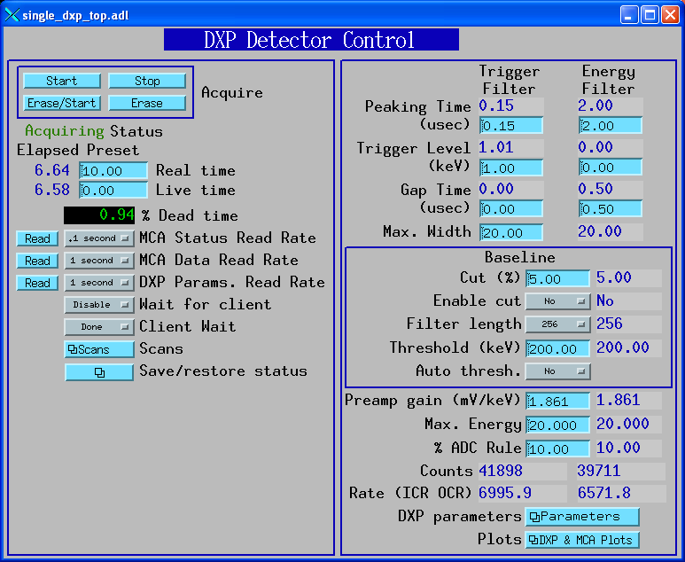
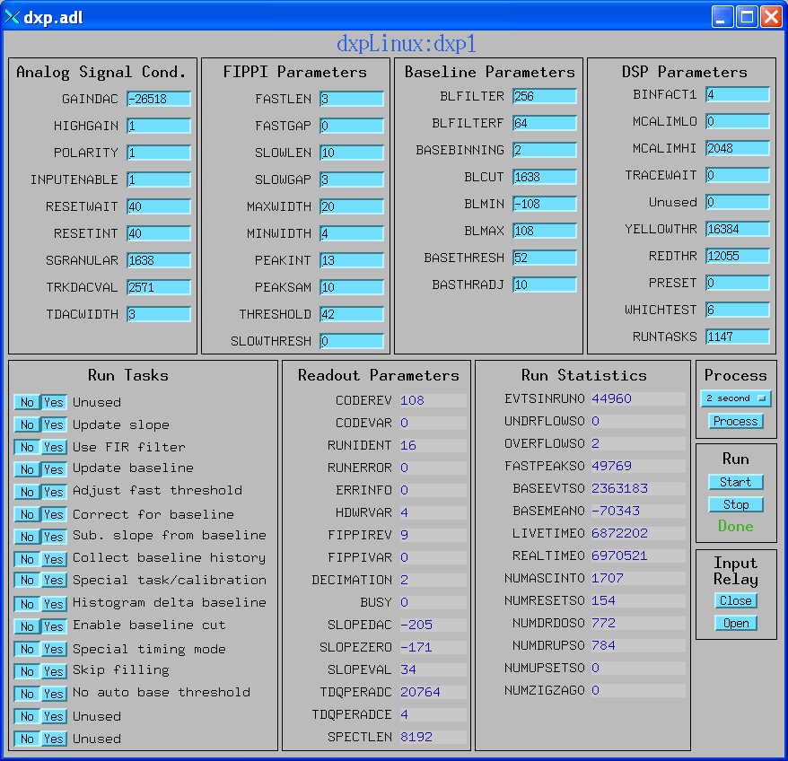
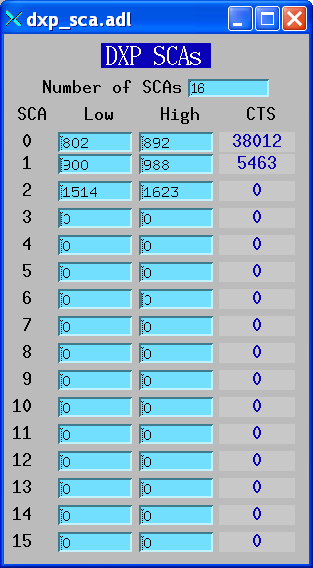
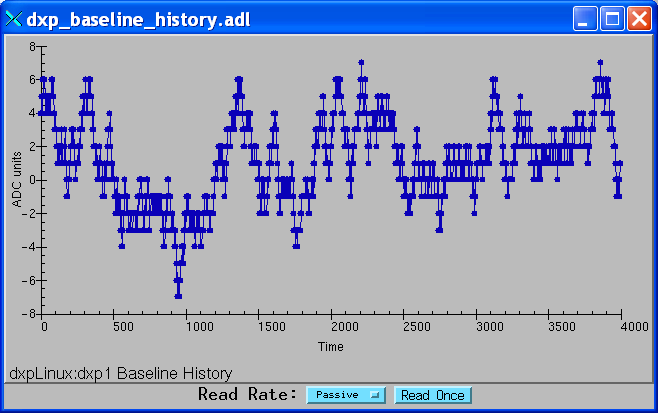
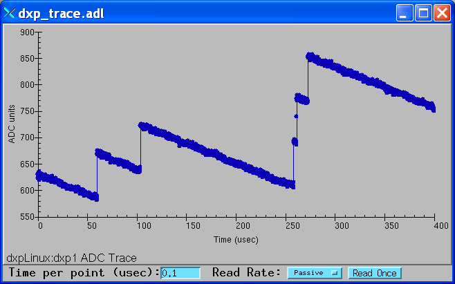

The DXP record provides EPICS control of all of the parameters for detector electronics from XIA. These include both high-level parameters like peaking time, and all of the low-level device parameters. The DXP record is not intended for collecting spectra. That is done using the EPICS MCA record.
The DXP Record communicates with the hardware using the XIA Handel library, which in turn communicates with the XIA Xerxes library. It currently supports the following hardware and operating systems:
This document does not attempt to explain the meaning or use of all of the DXP parameters. The best documentation of the operation of the DXP modules is provided by XIA in the Saturn User's Manual. That manual also describes the Kepler software, which does not apply to EPICS users, but it provides an excellent description of the theory of digital pulse processing as implemented in the DXP models from XIA.
In the "Access" columns in the field description tables below:
| R | Read only | |
| R/W | Read and write are allowed | |
| R/W* | Read and write are allowed; write triggers record processing if the record's SCAN field is set to "Passive". | |
| N | No access allowed |
| Name | Access | Prompt | Data type | Description |
|---|---|---|---|---|
| INP | R | "Input specification" | DBF_STRING | The name of the asyn "port" that has been created with dxpConfig() for this hardware. This must be specified when loading the record at iocInit(). |
| MTYP | R | "Module type" | DBF_LONG | The module type (defined in epicsHandelUtils.h) for the hardware model. |
| Name | Access | Prompt | Data type | Description |
|---|---|---|---|---|
| BASE | R | "Baseline Histogram" | DBF_LONG | The baseline histogram array. This array is read from the hardware by writing 1 to the .READ_HISTOGRAM field. The baseline histogram provides a valuable diagnostic of the electronic noise in the system. It should ideally be a perfect Gaussian, with a FWHM equal to the electronic noise in the baseline. |
| BASE_CUT | R | "Baseline Cut" | DBF_LONG | The baseline histogram cut array. This array is used to display visually where the baseline cut is set on the baseline histogram plot. It is updated when the baseline cut is enabled/disabled, or when the BLMIN or BLMAX low-level parameters are changed by the XIA firmware. |
| BASE_X | R | "Baseline Histogram X" | DBF_FLOAT | The baseline histogram X axis array. This array is used to display the baseline histogram with an X-axis calibrated in keV. |
| BHIST | R | "Baseline History" | DBF_LONG | The baseline history array. This array is read from the hardware by writing 1 to the .READ_HISTORY field. The baseline history provides a valuable diagnostic of the electronic noise in the system. It provides a plot of the most recent baseline values versus time. |
| BHIST_X | R | "Baseline History X" | DBF_FLOAT | The baseline history X axis array. This array is used to display the baseline histogram with an X-axis calibrated in microseconds. NOTE: This field currently only contains calibrated values for the xMAP hardware. It is not possible to obtain calibrated time values for the Saturn or DXP-2X. |
| TRACE | R | "ADC trace" | DBF_LONG | The ADC trace array. This array is read from the hardware by writing 1 to the .READ_TRACE field. The ADC trace provides the equivalent of a digital scope trace of the pre-amp input to the module. The time per point can be controlled with the .TRACE_WAIT field. |
| TRACE_X | R | "ADC Trace X" | DBF_FLOAT | The ADC trace X axis array. This array is used to display the ADC trace with an X-axis calibrated in microseconds. It is updated when .TRACE_WAIT is changed. |
| Name | Access | Prompt | Data type | Description |
|---|---|---|---|---|
| STRT | R/W* | "Start acquiring" | DBF_LONG | Writing 1 to this field will start data acquisition. |
| STOP | R/W* | "Start acquiring" | DBF_LONG | Writing 1 to this field will stop data acquisition. |
| ERAS | R/W* | "Erase data" | DBF_LONG | Writing 1 to this field will cause the module to erase existing data. |
| ACQG | R | "Acquiring" | DBF_LONG | This field is 1 if the module is currently acquiring data, 0 if it is not acquiring. |
Note that if the MCA record is being used, then it is normally used to control acquisition, rather than tha fields above.
| Name | Access | Prompt | Data type | Description |
|---|---|---|---|---|
| READ_PARAMS | R/W* | "Read parameters" | DBF_LONG | Writing a 1 to this field will cause the DXP record to read all of the high-level and low-level parameters from Handel and the hardware. These parameters are also read automatically whenever one of the high-level or low-level parameters is modified. |
| READ_HISTOGRAM | R/W* | "Read baseline histogram" | DBF_LONG | Writing a 1 to this field will cause the DXP record to read the baseline histogram and update the .BASE array field. |
| READ_HISTORY | R/W* | "Read baseline history" | DBF_LONG | Writing a 1 to this field will cause the DXP record to read the baseline history and update the .BHIST array field. |
| READ_TRACE | R/W* | "Read ADC trace" | DBF_LONG | Writing a 1 to this field will cause the DXP record to read the ADC trace and update the .TRACE array field. |
| OPEN_RELAY | R/W* | "Open input relay" | DBF_LONG | Writing a 1 to this field will cause the DXP record to open the input relay, disconnecting the DXP module from the detector pre-amplifier. |
| CLOSE_RELAY | R/W* | "Close input relay" | DBF_LONG | Writing a 1 to this field will cause the DXP record to close the input relay, connecting the DXP module to the detector pre-amplifier. This is the normal state. |
| Name | Access | Prompt | Data type | Description |
|---|---|---|---|---|
| TRIG_PKTIM | R/W* | "Fast filter peaking time" | DBF_DOUBLE | The peaking time in microseconds for the fast filter. The fast filter is used to detect input pulses, and determines the Input Count Rate (ICR). |
| TRIG_PKTIM_RBV | R | "Fast filter peaking time readback" | DBF_DOUBLE | The actual peaking time in microseconds for the fast filter, which may differ from the requested time because of the finite clock speed of the DXP. |
| TRIG_GAPTIM | R/W* | "Fast filter gap time" | DBF_DOUBLE | The gap time in microseconds for the fast filter. |
| TRIG_GAPTIM_RBV | R | "Fast filter gap time readback" | DBF_DOUBLE | The actual gap time in microseconds for the fast filter, which may differ from the requested time because of the finite clock speed of the DXP. |
| FAST_TRIG | R/W* | "Fast filter threshold" | DBF_DOUBLE | The threshold in keV for the fast filter. |
| FAST_TRIG_RBV | R | "Fast filter threshold readback" | DBF_DOUBLE | The actual threshold in keV for the fast filter, which may differ from the requested threshold. |
| PKTIM | R/W* | "Slow filter peaking time" | DBF_DOUBLE | The peaking time in microseconds for the slow filter. The slow filter is used to measure the energy of the input pulses. Increasing this time will generally improve the energy resolution at the expense of decreased output count rate (OCR). |
| PKTIM_RBV | R | "Slow filter peaking time readback" | DBF_DOUBLE | The actual peaking time in microseconds for the slow filter, which may differ from the requested time because of the finite clock speed of the DXP. |
| GAPTIM | R/W* | "Slow filter gap time" | DBF_DOUBLE | The gap time in microseconds for the slow filter. This should be set to the maximum rise time of the input pulses. |
| GAPTIM_RBV | R | "Slow filter gap time readback" | DBF_DOUBLE | The actual gap time in microseconds for the slow filter, which may differ from the requested time because of the finite clock speed of the DXP. |
| SLOW_TRIG | R/W* | "Slow filter threshold" | DBF_DOUBLE | The threshold in keV for the slow filter. This should generally be set to 0. except for soft x-ray spectroscopy. |
| SLOW_TRIG_RBV | R | "Slow filter threshold readback" | DBF_DOUBLE | The actual threshold in keV for the slow filter, which may differ from the requested threshold. |
| MAXWIDTH | R/W* | "Maximum width" | DBF_DOUBLE | Maximim peak width for pileup inspection. NOTE: On the xMAP the units are microseconds but on the Saturn and DXP2X the units are currently integer device units. |
| MAXWIDTH_RBV | R | "Maximum width readback" | DBF_DOUBLE | The actual maximum width for pileup, which may differ from the requested value. |
| PGAIN | R/W* | "Pre-amp gain" | DBF_DOUBLE | The gain of the detector pre-amp in mV/keV. |
| PGAIN_RBV | R | "Pre-amp gain readback" | DBF_DOUBLE | The readback value of the pre-amp gain in mV/keV. |
| EMAX | R/W* | "Maximum energy (keV)" | DBF_DOUBLE | The energy of the last channel in the spectrum in keV. Modifying this value causes Handel to change a number of low-level parameters, including BINFACT and the analog input gain. If the actual energy of the last channel is not equal to this value, then one should edit the .ini file to modify the value of the pre-amp gain. |
| EMAX_RBV | R | "Maximum energy readback (keV)" | DBF_DOUBLE | The actual energy of the last channel in the spectrum in keV, as determined by Handel. This will not be correct if the pre-amp gain in the .ini file is wrong. |
| ECAL | R/W* | "Calibration energy (keV)" | DBF_DOUBLE | The "calibration energy". This is the energy at which the ADC_RULE applies. The default is 10 keV, and there is rarely any need to change this. |
| ECAL_RBV | R | "Calibration energy readback (keV)" | DBF_DOUBLE | The actual calibration energy . |
| ADC_RULE | R/W* | "ADC rule at ECAL" | DBF_DOUBLE | The percent of the range of the input ADC that should be used for pulses whose energy is at the energy of the ECAL field, normally 10 keV. The normal range is 5-10% for reset pre-amplifiers and 30-50% for RC pre-amplifiers. The goal is to digitize the baseline noise into a few ADC bits (look at the ADC trace), but not have the value so large that the input signal drifts out of the ADC range (look at the number of drift ups and drift downs, NUMDRUPS0 and NUMDRDOS0). |
| ADC_RULE_RBV | R | "ADC rule readback" | DBF_DOUBLE | The actual ADC rule value. |
| BASE_CUT_PCT | R/W* | "Baseline cut %" | DBF_DOUBLE | The baseline cut value, in percent units of the baseline histogram. Baseline values outside the cut range will not be used in computing the baseline average, but they will still be included in the baseline histogram. The .T11V field can be used to enable or disable the baseline cut. |
| BASE_CUT_PCT_RBV | R | "Baseline cut % readback" | DBF_DOUBLE | The actual baseline cut value. |
| BASE_CUT_ENBL | R/W* | "Enable baseline cut %" | DBF_MENU | A flag to enable or disable the baseline cut. |
| BASE_CUT_ENBLE_RBV | R | "Baseline cut enable readback" | DBF_DOUBLE | The actual baseline cut enable value. |
| BASE_LEN | R/W* | "Baseline filter length" | DBF_MENU | The length of the baseline filter in samples. Menu values are powers of 2 from 2 to 65536. |
| BASE_LEN_RBV | R | "Baseline filter length readback" | DBF_DOUBLE | The baseline filter length readback. |
| BASE_THRESH | R/W* | "Baseline filter threshold" | DBF_DOUBLE | The baseline filter threshold. In this release the units of this parameter are keV on the xMAP and integer device units on the Saturn and DXP-2X. This is a new DXP parameter, and is not yet documented by XIA. However, it has a major effect on spectra, and it is often necessary to increase this value from the initial value. On the Saturn and DXP-2X the .T14V field can be used to enable or disable automatic modification of this parameter by the DXP firmware. |
| BASE_THRESH_RBV | R | "Baseline threshold readback" | DBF_DOUBLE | The baseline threshold readback. |
| TRACE_WAIT | R/W* | "Trace wait (usec)" | DBF_DOUBLE | The time per point to collect the ADC trace data. Units are microseconds. |
| BHIST_TIME | R/W* | "Baseline history time (usec)" | DBF_DOUBLE | The time per point to collect the baseline history data. Units are microseconds. This parameter is only applicable to the xMAP hardware in the current release. It is not possible to control the time per baseline history point on the Saturn and DXP-2X. |
| Name | Access | Prompt | Data type | Description |
|---|---|---|---|---|
| FAST_PEAKS | R | "Fast peaks (triggers)" | DBF_LONG | The number of fast peaks, i.e. peaks detected by the fast trigger filter. |
| SLOW_PEAKS | R | "Slow peaks (counts)" | DBF_LONG | The number of slow peaks, i.e. peaks detected by the slow energy filter. |
| ICR | R | "Input count rate" | DBF_DOUBLE | The input count rate, i.e. the number of fast peaks per second. |
| OCR | R | "Output count rate" | DBF_DOUBLE | The output count rate, i.e. the number of slow peaks per second. |
The DXP modules provide emulation of 16 single-channel analyzers. These compute the total counts in each of 16 SCAs. The SCAs are defined by a low channel and a high channel.
| Name | Access | Prompt | Data type | Description |
|---|---|---|---|---|
| NUM_SCAS | R/W* | "Number of SCAs" | DBF_LONG | The number of SCAs. NOTE: Due to limitations in Handel this currently has no effect, the number of SCAs defined is always 16. |
| SCA(N)_LO | R/W* | "SCA N low channel" | DBF_LONG | The low channel for SCA N (N=1-16). Actual field names are SCA0_LO, SCA1_LO, etc. Range is 0 to SCA(N)_HI. |
| SCA(N)_LO_RBV | R | "SCA N low channel readback" | DBF_LONG | The actual low channel for SCA N (N=1-16). Actual field names are SCA0_LO_RBV, SCA1_LO_RBV, etc. |
| SCA(N)_HI | R/W* | "SCA N high channel" | DBF_LONG | The high channel for SCA N (N=1-16). Actual field names are SCA0_HI, SCA1_HI, etc. Range is SCA(N)_LO to maximum channels-1. The record will set _HI to the value of _LO if _HI would otherwise be less than _LO. |
| SCA(N)_HI_RBV | R | "SCA N high channel readback" | DBF_LONG | The actual high channel for SCA N (N=1-16). Actual field names are SCA0_HI_RBV, SCA1_HI_RBV, etc. |
| SCA(N)_CTS | R | "SCA N counts" | DBF_LONG | The total counts in SCA N (N=1-16). Actual field names are SCA0_CTS, SCA1_CTS, etc. These counts are only computed by the DXP firmware when acquisition stops. |
The DXP record provides control and/or display of all low level parameters in the DXP, of which there are more than 80. Note that only expert users should modify these parameters directly. Most users will only control the high-level parameters described above, and let Handel control the low-level parameters. Note that on the xMAP many of these parameters do not exist, and their use should be avoided. It is expected that newer Handel releases for the Saturn and DXP2X will make the use of low-level parameters unnecessary on those models as well.
The low-level parameter control is provided in a flexible and extensible way, because the parameters are specific to each firmware type and release. For example, the parameters are different for different types of pre-amplifiers (RC versus reset).
The flexibility is provided in the following manner. Each low level parameter is associated with 3 fields in the DXP record:
The naming convention for the low-level parameters is PrefixNumberSuffix, e.g. A01L. As explained above the suffix has the value L, V or O. The following table summarizes the low-level fields:
| Prefix | Description | Number | Access | Data type |
|---|---|---|---|---|
| A | Analog signal conditioner (ASC) parameters | 01 to 09 | R/W* | DBF_SHORT |
| F | FIPPI parameters | 01 to 10 | R/W* | DBF_SHORT |
| B | Baseline parameters | 01 to 08 | R/W* | DBF_SHORT |
| D | DSP parameters | 01 to 10 | R/W* | DBF_SHORT |
| T | Run tasks parameters | 01 to 16 | R/W* | DBF_ENUM. These fields have the values 0 (No) or 1 (Yes). |
| R | Readout parameters | 01 to 16 | R | DBF_SHORT |
| S | Statistics parameters | 01 to 14 | R | DBF_LONG |
The following table lists the current low-level parameters associated with each low-level DXP record field. Differences between the RC and reset firmware are noted. Every effort will be made to keep the same DXP record field name associated with the same firmware parameter name in subsequent software and firmware releases. This may not always be possible, particularly if existing firmware parameters are deleted or renamed.
| Field | Firmware parameter | Description |
|---|---|---|
| Analog Signal Conditioner (ASC) Fields | ||
| A01 | GAINDAC | Gain DAC for setting analog input gain. |
| A02 | HIGHGAIN | See manual. |
| A03 | POLARITY | Pre-amp polarity (not high-voltage polarity). Positive polarity means an x-ray pulse causes an increase in the pre-amp voltage output. 0=negative, 1=positive. |
| A04 | INPUTENABLE | See manual. |
| A05 | RESETWAIT | Time to wait after a reset before collecting data. |
| A06 | RESETINT | See manual. |
| A07 (reset) | SGRANULAR | See manual. |
| A07 (RC) | RCTAU | Pre-amp time constant. |
| A08 (reset) | TRKDACVAL | See manual. |
| A08 (RC) | RCTAUFRAC | Fractional adjustment in RC when auto-tuning? |
| A09 (reset) | TDACWIDTH | See manual. |
| A09 (RC) | Unused | Unused. |
| FIPPI Fields | ||
| F01 | FASTLEN | Length of the fast filter. |
| F02 | FASTGAP | Length of the fast filter gap. |
| F03 | SLOWLEN | Length of the slow filter. |
| F04 | SLOWGAP | Length of the slow filter gap. |
| F05 | MAXWIDTH | Maximum width of a valid pulse. |
| F06 | MINWIDTH | Minimum width of a valid pulse. |
| F07 | PEAKINT | See manual. |
| F08 | PEAKSAM | Time to sample the peak height. |
| F09 | THRESHOLD | Fast filter threshold. |
| F10 | SLOWTHRESH | Slow filter threshold. |
| Baseline Fields | ||
| B01 | BLFILTER | Length of the baseline filter. |
| B02 | BLFILTERF | See manual. |
| B03 | BASEBINNING | Binning factor when constructing baseline histogram. |
| B04 | BLCUT | Baseline cut for excluding outlier values from baseline average |
| B05 | BLMIN | Low channel computed by firmware from BLCUT. |
| B06 | BLMAX | High channel computed by firmware from BLCUT. |
| B07 | BASETHRESH | Baseline threshold value. Not documented by XIA yet. |
| B08 | BASTHRADJ | Baseline threshold adjust value. Not documented by XIA yet. |
| DSP Fields | ||
| D01 | BINFACT1 | Binning factor when converting ADC units to MCA channel. |
| D02 | MCALIML0 | First MCA channel to use. |
| D03 | MCALIMHI | Last MCA channel to use. |
| D04 | TRACEWAIT | Time per point for ADC trace. |
| D05 (reset) | Unused | Unused. |
| D05 (RC) | ASCTIMEOUT | See manual. |
| D06 | YELLOWTHR | Count rate threshold for yellow light. |
| D07 | REDTHR | Count rate threshold for red light. |
| D08 | PRESET | Flag for what type of preset to use (none, live time, real time, or counts). |
| D09 | WHICHTEST | Special task number to be run by firmware. |
| D10 | RUNTASKS | Bit pattern of flags to tell firmware what options to use. The T01-T16 fields provide access to the individual bits of this word. |
| Runtasks Fields | ||
| T01 | RUNTASKS (bit 0) | Unused. |
| T02 | RUNTASKS (bit 1) | Update slope. |
| T03 | RUNTASKS (bit 2) | Use finite impulse response (FIR) filter. Default is infinite impulse response (IIR) filter. |
| T04 | RUNTASKS (bit 3) | Update baseline. |
| T05 | RUNTASKS (bit 4) | Automatically adjust fast threshold. |
| T06 | RUNTASKS (bit 5) | Correct for baseline. |
| T07 | RUNTASKS (bit 6) | Subtract slope from baseline. |
| T08 | RUNTASKS (bit 7) | Collect baseline history. |
| T09 | RUNTASKS (bit 8) | Special task or calibration task. |
| T10 | RUNTASKS (bit 9) | Histogram delta baseline. |
| T11 | RUNTASKS (bit 10) | Enable baseline cut. |
| T12 | RUNTASKS (bit 11) | Special timing mode. |
| T13 | RUNTASKS (bit 12) | Skip filling. |
| T14 | RUNTASKS (bit 13) | Disable automatic baseline threshold adjust. |
| T15 | RUNTASKS (bit 14) | Unused. |
| T16 | RUNTASKS (bit 15) | Unused. |
| Readout Fields | ||
| R01 | CODEREV | Firmware revision. |
| R02 | CODEVAR | Firmware variant. |
| R03 | RUNIDENT | Run identification. This starts at zero when the IOC initializes, and increments by 1 each time acquisition is started. |
| R04 | RUNERROR | Error number. |
| R05 | ERRINFO | Error information. |
| R06 | HDWRVAR | Hardware model. |
| R07 | FIPPIREV | FIPPI revision. |
| R08 | FIPPIVAR | FIPPI variant. |
| R09 | DECIMATION | Decimation value, i.e. subsampling factor for the input at longer peaking times. |
| R10 | BUSY | Busy flag, indicating if module is busy. |
| R11 (reset) | SLOPEDAC | The ramp slope D/A converter value. |
| R11 (RC) | OFFSETDAC | The offset D/A converter value. |
| R12 (reset) | SLOPEZERO | The ramp slope D/A converter zero. |
| R12 (RC) | OFFDACZERO | The offset D/A converter zero. |
| R13 (reset) | SLOPEVAL | See manual. |
| R13 (RC) | OFFSETVAL | See manual. |
| R14 (reset) | TDQPERADC | The tracking DAC units per ADC unit. |
| R14 (RC) | Unused | Unused. |
| R15 (reset) | TDQPERADCE | See manual. |
| R15 (RC) | Unused | Unused. |
| R16 | SPECTLEN | The total length of the MCA memory. |
| Statistics Fields | ||
| S01 | EVTSINRUN0 | Number of events in run. These are pulses that were accumulated in the MCA spectrum. |
| S02 | UNDRFLOWS0 | Number of underflows. These are pulses that would have been in an MCA channel less than MCALIMLO. |
| S03 | OVERFLOWS0 | Number of overflows. These are pulses that would have been in an MCA channel greater than MCALIMHI. |
| S04 | FASTPEAKS0 | Number of fast peaks. These are pulses counted by the fast (trigger) filter. |
| S05 | BASEEVTS0 | Number of baseline events. |
| S06 | BASEMEAN0 | Mean value of the baseline. |
| S07 | LIVETIME0 | Number of livetime clock ticks. |
| S08 | REALTIME0 | Number of realtime clock ticks. |
| S09 | NUMASCINT0 | Number of ASC interrupts. This is the number of times that the ASC had to interrupt the DSP, typically because the input signal is out of the range of the ADC. |
| S10 | NUMRESETS0 | Number of pre-amp resets. |
| S11 | NUMDRDOS0 | Number of drift downs. This is the number of times that the input signal drifted below the range of the ADC. |
| S12 | NUMDRUPS0 | Number of drift ups. This is the number of times that the input signal drifted above the range of the ADC. |
| S13 | NUMUPSETS0 | Number of upsets. |
| S14 | NUMZIGZAG0 | Number of zig-zags. This is the number of times that the input signal drifted above and below the range of the ADC. |
Because the DXP record can perform so many different tasks, and because it is designed for high performance, it behaves differently from typical simple EPICS records like ai and ao. Processing the record does not actually do anything unless one has written to one of the fields in the record that has the Process Passive attribute. For example, writing a 1 to the .READ_HISTOGRAM field will cause the record to process, and to read the baseline histogram array from the hardware. Similarly, to read the DXP parameters write a 1 to the .READ_PARAMS field, and to read the ADC trace, write a 1 to the .READ_TRACE field. Writing to any high-level parameter such as the peaking time (.PKTIM), or to any low-level parameter (e.g. .A01V) will cause the record to read back all of the parameters, as if the .READ_PARAMS field had been set to 1. The .VAL field of the DXP record exists, but it is not used.
There are 3 types of debugging messages that can be enabled for the DXP software:
var dxpRecordDebug 10On vxWorks
dxpRecordDebug=10
asynSetTraceMask("DXP1",0,255)
asynSetTraceIOMask("DXP1",0,2)
The second parameter in these commands is the asyn "address" which is the channel number
in the system. For a system with 16 dxp records on port DXP1 the parameter must be in
the range 0-15.
xiaSetLogLevel(3)The logging level can be set to 1=error, 2=warning, 3=information, 4=debug.
The DXP record has associated device support. This device support is closely coupled to the record and is intended to support all DXP models. It is not expected that there will be a need for additional device support.
The EPICS software communicates with the XIA Handel software through an asyn server. This server provides a single thread that is used for all calls to the Handel library. For the MCA record the server implements standard asyn interfaces like asynInt32, asynInt32Array, and asynFloat64. The server makes calls to Handel in these interface methods.
The DXP device support uses the asyn server by connecting to it, and queuing asyn requests via that server. However, the DXP device support callback does not use the asyn interfaces provided by the asyn server. Rather, the callback routine directly calls the Handel functions. This is perfectly OK to do, and is much simpler than trying to provide interfaces in the asyn server for all of the functions that the device support needs. By using a single asyn server (single thread) for both the MCA and DXP records it is guaranteed that they will not conflict. There is also an EPICS mutex that is used to protect all calls to the Handel library. This is necessary even with the single asyn server thread because the init_record routine makes some Handel calls directly, and this can conflict with the asyn server thread that is already running when init_record is still being called.
The DXP and MCA records communicate only through the Handel API, they do not call any Xerxes functions directly. Handel calls Xerxes, which in turn calls the machine-dependent functions, which are specific to a particular operating system and hardware model. For the Saturn on Windows the DXP software uses the standard XIA machine dependent support. For Linux and vxWorks there is a new md_epics.c file that implements the low-level drivers for the parallel port (Linux) and CAMAC (vxWorks).
Information on how to install, configure and run the EPICS DXP software is given in the general EPICS DXP documentation.
The following are some future plans for the DXP record:
The following are screen shots of the medm screens provided for the DXP application on a single-element detector, such as the Saturn. These screens display and control EPICS process variables that are provided in the files dxp.db and mca.db. These include records other than just the DXP record itself.
Main control screen for single-element detector.

Complete screen for low-level DXP parameters and control.

Screen for SCA display and control.

Screen to display the spectral data and control acquisition. Note that this screen is provided in the EPICS MCA application, not in the DXP application.
Screen to display the baseline histogram and control its update rate.

Screen to display the baseline history and control its update rate.

Screen to display the ADC trace, and control the time per point and update rate.
